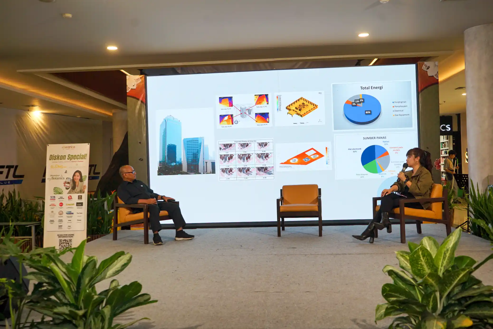
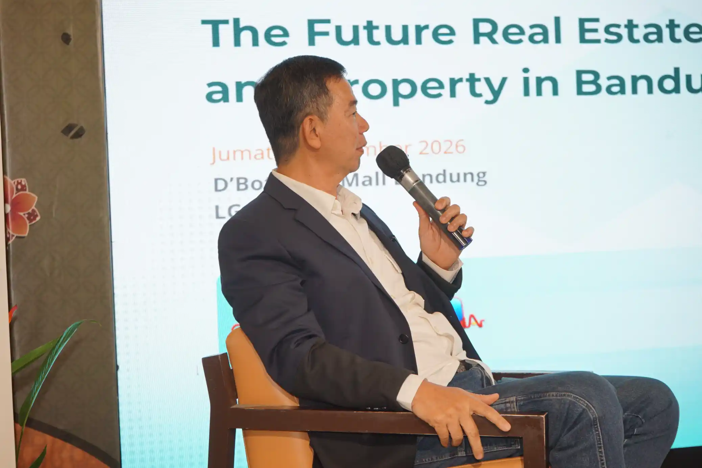
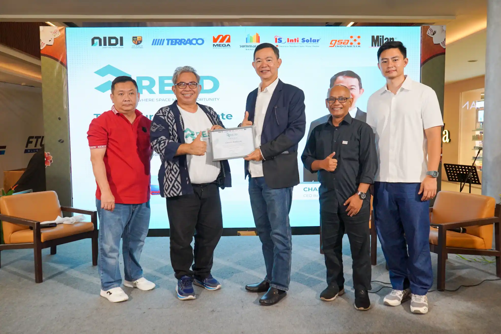

Event · Exhibition · Real Estate
RE.ID Expo 2026
Real Estate & Interior Design Expo
D'Botanica Mall Bandung menjadi lokasi penyelenggaraan RE.ID Expo 2026, sebuah rangkaian kegiatan yang mempertemukan dunia real estate, desain interior, inovasi, kreativitas, dan pengalaman produk dalam satu ruang pameran.
Selama dua hari, kegiatan ini menghadirkan beragam agenda, mulai dari exhibition dan product experience, brand activation, presentasi perusahaan, talk show, hingga aktivitas networking dan kompetisi. Setiap agenda menjadi bagian dari pengalaman yang membangun interaksi antara pelaku industri, pengunjung, dan komunitas.

Day 1 — Business & Innovation Day
Hari pertama mengangkat tema Business & Innovation Day dengan semangat Connect Networking. Area pameran dibuka sepanjang hari melalui exhibition, product experience, dan brand activation.
Rangkaian program menghadirkan Grand Opening, Exhibition Tour, presentasi Intisolar, Architecture Talk bersama Dr. Ar. Tantri Oktavia, ST., MT., GP.IAI, serta Developer Presentation bersama Summarecon.
Agenda berikutnya mencakup presentasi AIDI HPL, talk show The Future Real Estate and Property in Bandung bersama Chandra Tambayong dari BIG Group, Material Talk oleh Teracco dan Mega Bangunan, serta Networking Night Synergy Jabar.

Day 2 — Design, Creativity & Competitive Day
Hari kedua membawa tema Design, Creativity & Competitive Day dengan semangat Create New Ideas. Aktivitas exhibition, product experience, dan brand activation kembali menjadi bagian dari pengalaman pengunjung.
Program hari kedua menghadirkan presentasi Intisolar, Design Interior Talk bersama GRHA, serta pembahasan AI Architecture oleh Sekolah AI Nusantara. Rangkaian kegiatan kemudian dilanjutkan dengan Mahjong Showdown sebagai kompetisi yang berlangsung pada sore hingga malam hari.
Perpaduan agenda bisnis, desain, teknologi, kreativitas, dan kompetisi memperlihatkan beragam sisi pengalaman dalam penyelenggaraan RE.ID Expo.

Dokumentasi sebagai Jejak Pengalaman
Melalui dokumentasi foto dan video, RE.ID Expo 2026 direkam sebagai rangkaian pengalaman yang menghubungkan aktivitas pameran, interaksi pengunjung, presentasi, dan dinamika program selama dua hari.
Setiap momen menjadi bagian dari arsip visual yang memperlihatkan bagaimana sebuah kegiatan industri berlangsung dalam konteks ruang, waktu, dan keterlibatan berbagai pihak.
Bagi Lens & Narrative, dokumentasi bukan sekadar mengabadikan suasana acara. Visual menjadi catatan yang membantu sebuah peristiwa dikenali, diingat, dan ditelusuri kembali.
A Moment Recorded
RE.ID Expo 2026 tercatat sebagai node pengalaman yang menghubungkan real estate, interior design, inovasi, dan kreativitas dalam satu rangkaian peristiwa. Dua hari aktivitas menjadi jejak visual yang merekam pertemuan ide, industri, dan manusia.
Baca juga: